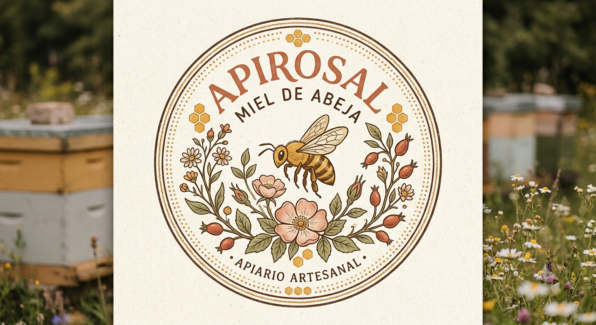
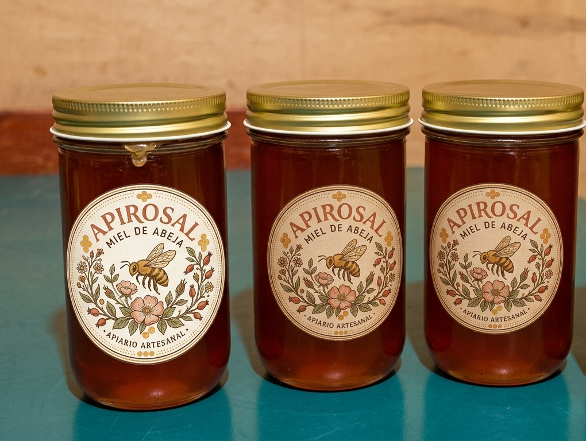
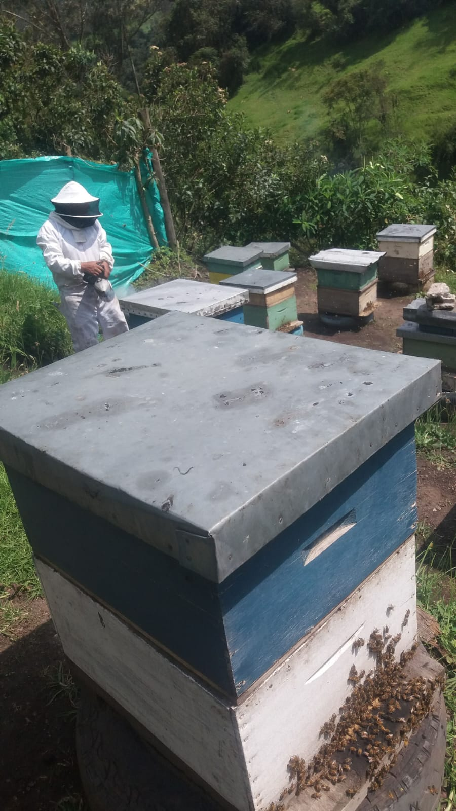
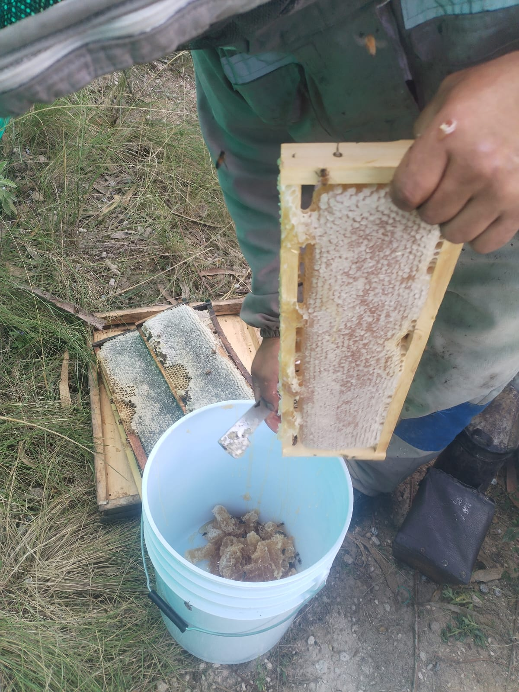

Sobre ApiRosal

ApiRosal es un apiario dedicado a producir miel de abeja de la mejor calidad. Nuestra miel es natural, sin aditivos y cosechada con amor en colmenas saludables.
100% natural
Certificamos un proceso limpio y artesanal, desde la colmena hasta tu mesa.
Sabor auténtico
Cada frasco conserva el aroma y las notas dulces propias de la floración local.
Entrega rápida
Envios disponibles por delivery o recogida en el apiario para tu comodidad.
Productos disponibles
Descubre nuestras presentaciones para uso diario, regalo o venta al por mayor.
Tarrina de Miel
Presentación ideal para el hogar, café y tostadas.
Tarrina de miel medio litro
Perfecta para familias y uso regular.
Cera de abeja
Para uso en velas y belleza(bajo pedido).
Beneficios y propiedades de la miel
ApiRosal ofrece miel de abeja pura con propiedades naturales que respaldan tu salud y bienestar.
Antioxidante natural
Contiene compuestos que ayudan a proteger las células del daño y contribuyen a una mejor salud general.
Propiedades antibacterianas
Ideal para aliviar la garganta y apoyar la recuperación gracias a sus cualidades naturales.
Energía inmediata
Fuente de carbohidratos naturales que brinda impulso en el desayuno, deportes o épocas de fatiga.
Hidratación y cuidado
Usada en recetas caseras para piel y cabello, ayuda a mantener la hidratación y suavidad.
Galería
Imágenes representativas de nuestras colmenas, el proceso y los productos.



Procesos
Conoce cómo trabajamos en el apiario, desde la colmena hasta el frasco.
Video del proceso
Videos
Mira otros materiales visuales sobre nuestro apiario y la producción de miel.
Contacto
Habla con nosotros y pide tu miel directamente por WhatsApp.
WhatsApp: 099 836 3400
Nombre del apiario: ApiRosal